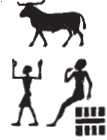
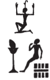

Column 1 (194-203)
Esna 194
- Location: Column 1
- Date: Probably Trajan
-
Hieroglyphic Text
- Bibliography: Sauneron 1962, p. 74 (194, A). See also:
- 194 A
- 194 B
Answ.t-bỉty
ẖnmw-Rʿ nb tȝ-sn.t
nṯr ʿȝ
nb p.t tȝ dwȝ.t mw.w ḏw.w
kȝp.n=f hȝy.t
twȝ.n=f nw.t
m ḥb=f nfr
n 3 ȝbd prw sw 1
wbn=f ỉm=s m šww
m dỉ=f ṯȝw n ʿnḫ
r fnḏ n nṯr.w
mỉt.t rmṯ
ỉw n=f ḥʿpỉ
ỉỉ.n=f ỉry m nḫb
nṯr wʿ dỉ=f ḥfn.w
n nṯr nb
A The King of Upper and Lower Egypt
Khnum-Re Lord of Esna,
great god,
lord of heaven, earth, Duat, water, mountains.
Just as he covered up the firmament,
so did he lift up the sky
in his good festival
of III Peret 1 ( Phamenoth 1 ).
He rises from it as the sun
as he gives the breath of life
to the gods’ noses,
and likewise people.
As Hapi arrived for him,
so he came from the lotus.
The sole god, he gives myriads
to every god.
Bẖnmw-Rʿ nb sḫ.t
ỉty ʿȝ šfy.t
ḫnt psḏ.t
nb mʿbȝ
qȝ-(ʿ)
sḫr ḫfty.w=f
m ḫ.t n sḫ.t
nb ʿq
rš.tw n mȝȝ=f
m wpy=f ʿȝ
ḥqȝ mnỉ.w
ʿȝ nḫt
ḥr-ỉb ṯwf
ḥqȝ tȝ.wy
m wȝs=f
zbỉ P m ỉḫḫ
ỉnỉ Pr-nṯr m ȝw.t-ỉb
B Khnum-Re Lord of the Field
Sovereign, Great of Prestige
within the Ennead.
Lord of the 30-spear,
high of (striking arm)1,
who slays his enemies
with a stick of the field.
Lord of festival,
one rejoices to see him
in his great wpy-festival.
Ruler of the herdsmen,
great of strength
within the papyrus thicket.
Ruler of the two lands
through his might.
He who travels to Pe in the evening,2
and reaches Per-netjer in happiness.3
Esna 195
- Location: Column 1
- Date: Trajan
-
Hieroglyphic Text
- Bibliography: 194 A
Heraldic cartouches of Trajan, Neith, Heka, and Khnum. Many unique spellings.
Heka’s names are spelled as follows:
3 
5
8 
10 
Esna 196
- Location: Column 1
- Date: Probably Trajan
-
Hieroglyphic Text
- Bibliography: Sauneron 1962, pp. 317-320, 324-330; see also Tempeltexte 2.0
1nt-ʿ n
ḥb ṯȝy ʿwn(.t)
ỉr(.w) m pr-ẖnmw nb sḫ.t
m ȝbd 3 šmw 20
m ḥb=f nfr
n ḥb ṯȝy ʿwn(.t)
ḥb qn n ẖnmw
ḫr.tw r=f
ỉr(.w) m ȝbd šmw 2 sw 9
r ȝbd 4 šmw ʿrqy
1 The ritual of
the Festival of Carrying the Staff
performed in Per-Khnum Lord of the Field,
on III Shomu 20 (= Epiphi 20 ),
in his good festival,
the Festival of Carrying the Staff,
or the Victory Festival of Khnum,
as it is also called.
It is celebrated from II Shomu 9 (= Payni 9 )
until IV Shomu 30 (= Mesore 30 ).
ỉr pr-ẖnmw n sḫ.t
pʿy.t n ḥʿpỉ
sḫỉ=s m sḫ.t
pḏ p(ȝ) tp
hbhb Nwn
bdbd nšw m ȝḫ.t
m qȝy.t tp.t
dỉ(.t) m Nwn m ḥȝ.t
nỉ ḫp(r) p.t tȝ dwȝ.t
ṯȝw (n) ʿnḫ wḫȝ wyn
pr=sn ḏ(s)=sn ỉmỉ.tw=sn
Regarding Per-Khnum of the Field (sḫ.t),
it is the land of Hapi,
it arose (sḫỉ) from the sḫt-flood:4
(first) the top part stretched out,5
the Nun waters were driven out,
and the sand was molded into the ȝḫ.t-field,6
resulting in the initial mound
which appeared from Nun in the beginning,
before heaven, earth, or Duat existed:
the breath (of) life, pillar of air, and light
they emerged by themselves from among them.
2pr-nṯr
n nṯr nṯr.w
ʿbȝ.t n Km-ȝ.t=f
pr n tȝ-ṯnn
nỉw.t n N.t
s.t-štȝ.t
n nṯr.w pȝwty.w
ḏȝỉs.w ʿȝ.w
nw pȝwty tpy
ʿḥ n Rʿ
ḥw.t-bȝ.w
n Šw Tfn.t
dwȝ.t štȝ.t pw
nn mȝȝ=s rmṯ.w nb(.w)
ỉmḥ.t nt ḥtpty.w
wȝỉ r sḫnd=s
ỉn ʿ.wt nb.w
ỉr tkn=s s.t
ḫp(r) ḫrwy.t
m tȝ-(r)-ḏr=f
2 Per-netjer
of the god of gods (Khnum);
Aba of Kematef,
the temple of Tatenen,
the city of Neith,
the mysterious place
of the primeval gods,
the great Djaisu
of the first primeval moment;
the palace of Re;
Temple of the Bas
of Shu and Tefnut;
it is the myterious Duat,
whih cannot be seen by any humans;
the cavern of the blessed dead.
May it never be trod upon
by any livestock.
If a woman should ever approach it,
a calamity will befall
the entire world!
ỉw mw ỉmỉ.tw=sn
tỉ-sw ḥr mḥ.t
n pr-ẖnmw n sḫ.t
3ỉr nww
zȝw-ẖnn ḫr.tw r=f
s.t gbgb ỉsy.t
r ỉr.tw
m-ḫt ỉr qn ỉm
nṯr pn ḥr ḏd
zmȝ wʿ snw=f ỉm=tn
The water among them
it is to the north,
of Per-Khnum of the Field.
13 As for the sacred lake,
it is called zȝw-ẖnn:
the place of massacre by the crew
which was carried out
following a rebellious event there.
This god said:
‘May each of you slaughter his fellow!’
ȝbd 2 šmw 9
ỉỉ pw ỉn Rʿ r bw
nty ỉw ỉt=f tȝ-ṯnn ỉm
ḥnʿ zȝ=f Šw
m-ḫt wnn tȝ m nḫn ʿȝ
ʿḥȝ (ḥr) pẖr m tȝ.wy ḫȝs.wt
sʿq ḥm=f ḥr gs-ḥry
ỉmnty n Pr-nṯr
r ỉmn=f
(r)-ḥȝ.t sbỉ.w nfy
ḥȝp.n=f sḫr.w=f
4m s.t-štȝ.t
ỉmn.n=f sw
m ḥry-ỉb ḏw
ḥw.t-ỉmn wr zp-snw
nn rḫ ỉmỉ.t=s
II Shomu 9 (= Payni 9 ),
Re came to the place
where is father Tatenen was,
along with his son Shu,
after the earth was in great chaos:
fighting was going around all lands.
His majesty was brought to the Upper Zone,
west of Per-netjer,
in order to conceal him
from these rebels.
He hid his conditions
4 in the mysterious place,
and he concealed himself
within a mountain:
The very great, Hidden Temple,
its contents are unknown.7
ʿḥʿ.n ỉw zȝ=f Šw
r mȝȝ=f
snḏm ỉb=f
m-ḫt mȝȝ=f sw
ḥtp ỉb=f
m ʿḥ=f
ḏd.ỉn=f n ỉt=f
ỉȝw tw zp-snw
p(ȝ) ỉt ỉt.w
tm m ḥʿw=f
ḏd.tw n=f Ỉtm
p(ȝ) wrš n sw 9
ḫr.tw r=f
ḏr wrš ḥm=f
m s.t tn
Then his son Shu came
to see him,
his heart was glad
after he saw him,
and his heart rested
in his palace.
Then he said to his father:
‘Praise to you,
father of fathers,
complete (tm) of limbs!’
Thus he is called Atum (Ỉtm),
the Guardian (wrS) of Day 9
he is also called,
because his Majesty stayed on guard (wrš)
in this place.8
ỉr m-ḫt
wn ỉn sbỉ.w
sḏm=sn sw
5ḏd Rʿ m gs-ḥry
ỉmnty n pr-ẖnmw
ʿḥʿ=k
šm=sn r ỉȝ.t tn
qmȝ=sn ḫnn
ḥnʿ ỉmỉ.w-ḫt(=ỉ)
Šw ḥnʿ ỉzy.t Rʿ
smȝ=sn sbỉ.w n Rʿ
m s.t tn
Now afterwards,
as for the rebels
they heard him (Shu).
5 Re said in the Upper Zone,
to the west of Per-Khnum:
‘May you arise!
They are coming to this mound,
so they might create chaos
among my followers.’
So Shu and the Crew of Re
they slaughtered the rebels of Re
in this place.
shb.n=f m-ʿqȝ
n s.t-ḥr.t rʿ nb
r ẖnm ỉt=f tȝ-ṯnn
ḥnʿ zȝ=f Šw
m sḫ.t=f
ḏd.tw ẖnmw-Rʿ nb sḫ.t
bw nb.w ḥr.tw zp-snw
r tkn 6sḫr.w
m-ẖnw=f
pḏ nmt.t r ḫfty.w=f
wr bȝw n šmʿ-mḥw
ntf rdỉ pȝy kȝ.w r ỉd.wt
rmṯ.w ʿ.wt mnmn.t
ʿnḫ=sn m kȝ.w
nw nb sḫ.t
nb ʿnḫ pw
snb r-ḫt=f
nb kȝ.w pw
ṯtf(?) ḏfȝ.w
ḥtp ỉb=f
n ḫnd ḥr mw=f
7sḫm ỉb=f
m ḫȝʿ zȝṯw=f
ntf ḏbȝ
ỉr ḏbȝ.w
sr nty r ḫp(r)
ỉw ḏd=f ḫpr(.w) ḥr-ʿ
nn wn ỉr m-ḫm=f
He enters in across
from the Upper Place, daily,
so his father, Tatenen, might unite (ẖnm)
with his son, Shu
in his field (sḫ.t),
thus one says Khnum-Re Lord of the Field (sḫ.t).
Everybody, please keep away
from disturbing the 6 conditions
within it.
(Khnum), wide of steps against his enemies,
great of power in Upper and Lower Egypt:
it is he who makes bulls mate with cows;
humans and all livestock
they live from the food
of the Lord of the Field.
He is the Lord of Life,
and health follows him.
He is the Lord of Food,
who pours out(?) provisions.
His heart is pleased
with whomever treads upon his water;
7 but his heart takes power
against whomever violates his ground.
He is the avenger,
who makes the avenging demons,
who announces what will come to pass,
whatever he says happens immediately:
nobody can act with him unaware.
nṯr.w rmṯ.w
mỉ=n m šms=f
nb=tn pw
tȝ.wy ḫȝs.wt
ḥr=tn r bwt=f
r tm ʿr s.t
r s.t=f
nỉ dgȝ=s kȝ=f m ḫʿỉ
zȝỉ tw r=s
ỉw nsw.t m 8bȝq=f
wḏȝ tȝ-r-ḏr=f
r ḫrwy.t
ỉw (n)ḏr ỉm r ȝḫ
wȝỉ n thỉ s(w)
Gods and humans,
let us come and serve him!
He is your lord!
Egypt and foreign lands,
stay away from his abomination,
do not let a woman go near
to his place,
and may she not see his Ka in procession.
Guard against this,
and the king will be in 8 his graces,
and the whole earth will be safe
from calamity.
Whoever adheres to this shall be excellent,
but woe to whomever violates it.
sḫʿ n ẖnmw p(ȝ) nḫy nfr
m tȝ-sn.t
r pr-ẖnmw n sḫ.t
wḏȝ r s.t-ḥr.t
r ẖnm ỉt=f Ỉtm
ỉr(.t) snṯr qbḥw
pr.t-ḫrw
m t ḥnq.t ỉḥw ȝpd.w
ỉrp ỉrṯ.t
ỉḫt nb.w nfr
nỉs rn=sn
9ʿq r ʿḥ
ḥtp ỉm
ỉw ḥr=f nfr r-ẖnw
ỉr(.t) ʿȝb.t ʿȝ.t
m ỉḫt nb.w nfr
Procession of Khnum the Good Protector
from Esna
to Per-Khnum of the Field,
going up to the Upper Place
to unite with his father, Atum.
Performing incense, cool-water,
voice offerings
of bread, beer, cattle, fowl,
wine, milk,
all good things,
while calling their names.
9 Enter the palace,
resting therein,
while his good face looks in.
Performing the great mixed offering
of all good things.
(tm?) rdỉ ḫp(r) ḫrw qȝ
m ʿqȝ=s
wpw(-ḥr) ḫrw ḥknw
nw wʿb ẖry-ḥb ḥry-tp
šmʿy.w mỉt.t
ḥr nty s.t ỉȝw pw
Ỉtm ỉȝw m ỉȝk ỉm=s
s.t štȝ.t pw
ỉmn wr zp-snw
ỉwty mȝȝ.tw=s ȝy
ỉmḥ.t pw nty 10ḥtpty.w
ḥts(.w) ḥnʿ Ỉtm
m s.t tn
ỉr.t ỉhȝy m-pẖr ỉȝ.t tn
r ḏr=s
ỉn z nb
ỉr ỉw wnw.t 11.t n hrw pn
sḫʿ n nṯr pn r pr-ẖnmw
ḥtp ḥr s.t=f wr.t
(Do not(?)) allow any loud voices
in front of it,
except (for) the voices of praises
by the wʿb-priest, chief lector priest,
and the chorus likewise.
Because it is the Place of the Old Man,
an aged Atum is in it as an old man.
It is the mysterious place,
very greatly hidden,
without anybody seeing it.
It is the cavern of 10 the blessed dead,
who are mummified alongisde Atum
in this place.
Perform ỉhȝy-praise all around this mound
in its entirety
by every man.
Then when the 11th hour arrives on this day,
procession of this god to Per-Khnum,
resting upon his great throne.
ỉr ẖnmw p(ȝ) nḫy nfr
ẖnmw-Rʿ nb sḫ.t pw
ỉw=f m ḥwnw
zȝ tȝ-ṯnn
wr n ỉt=f(?)
Šw pw
ỉw=f m wsr=f m sḫ.t
rdỉ n=f ỉȝw.t n ỉt=f
ỉw=f (ḥr) sr ḫʿ.w
m tȝ-sn.t
r nḏ.t ỉwty
11šm=f r pr-ẖnmw n sḫ.t
r sšm tȝ ỉt
r ẖnm ỉt=f Ỉtm
r rdỉ(.t) qbḥw
n šps.w
r sfsf-ȝw pr.t-ḫrw
n Wsỉr nb ʿnḫ.t
ḥnʿ ỉmy.w ỉȝ.t 4.t
m ỉmḥ.t
r rdỉ ḥtp.w-nṯr.w
(n) nty.w-ỉm
r ỉr(.t) ẖr.t
n ḥnmm.t
ỉr.n=f ỉs-nỉȝ n nṯr.w
swḥ r ẖnm.ty rmṯ.w
sʿnḫ.n=f wnn.t nb(.w)
m r’-ʿ.wy=f
As for Khnum the Good Protector,
he is Khnum-Re Lord of the Field
while he is a youth,
the son of Tatenen,
eldest one of his father(?).
He is (also) Shu,
while he is in his might in the Field,
to whom was given the office of his father,
he announced coronations
in Esna,
in order to protect the helpless.
11 He goes to Per-Khnum of the Field,
to lead the land of (his) father,
to unite with his father, Atum;
to give cool water to the august spirits;
to deposit offerings and invocations
for Osiris lord of Ankhet,
along with those within the four mounds
in the cavern;
to give divine offerings
to those are ‘there’ (the deceased);
to make food
for the sunfolk.
He has made a pleasant breeze for gods,
and air for the nostrils of humans,
thus he has enlivened all that exists
through his handiwork.
12ȝbd 2 šmw 10
sḫʿ n Ỉs.t nb(.t) ʿbȝ
ỉr(.t) ỉrw=s
mỉ nty r ʿrw pn
sḫʿỉ n ḥkȝ p(ȝ) ẖrd
m tȝ-sn.t
ỉr(.t) nt-ʿ=f
12 II Shomu 10 (= Payni 10 ),
procession of Isis, Lady of Aba,
performing her ritual
like what is on this papyrus roll.
Procession of Heka the Child
in Esna;
perform his ritual.9
hrw 11
sḫʿ n ẖnmw p(ȝ) nḫy nfr
m tr n dwȝw
nȝỉ m ḥr=f
r pr-sȝḥw-Rʿ
ḥtp m ʿḥ n pr pn
ỉr ỉw wnw.t 11.t m hrw pn
wḏȝ r tȝ-sn.t
ḥtp ḥr s.t=f wr.t
Day 11
Procession of Khnum the Good Protector
at the time of morning.
He travels forward
to Per-Sahure,
resting in the chapel of this temple.
Now when the 11th hour of this day comes
return to Esna,
and rest upon his great throne.
Esna 197
- Location: Column 1
- Date: Probably Trajan
-
Hieroglyphic Text
- Bibliography: Sauneron 1962, pp. 332-351; Sauneron 1958a; Leitz 2006, pp. 80-81 (with text notes); Quack 2013, p. 120; Kühnemund 2021, pp. 259-265 (non vidi); see also Tempeltexte 2.0
12ỉr ḫp(r) 1/2 1/10 1/30
n 3 šmw
m dwȝw nty ỉḫt ḥr ḫȝw.t
ḥb ṯȝy ʿwn
n ḥqȝ mnỉ.w
13nỉs ỉn ỉmy-p.t m Ỉwny.t
wʿb=sn ỉn ḥm.w-nṯr.w wʿb.w
ỉr(.t) ỉrw=sn ỉn wnwty.w nb
nw ḥw.t-nṯr
mỉ nty r-ḥȝ.t
sḫʿỉ n ẖnmw p(ȝ) nḫy nfr
nȝỉ m ḥr=f r pr-nṯr
12 Now on the 19th (15+3+1)
of III Shomu (= Epiphi 19)
on the morning of Offerings on the Altar,10:
the festival of Seizing the Staff
for the Chief of Herdsmen.
13 The star-watching priest11 in Iunyt announces
that the prophets and priests purify themselves;
all hourly priests of the temple
perform their duties,
just as (described) before.
Procession of Khnum the Good Protector, going with him to Per-netjer.
pḥ r tȝ s.t ỉr-sḫr.w
spr r s.t-ḥr.t
ẖnm ḥnʿ ỉt=f
sḫr ḫfty=f
ʿhʿ n ḫft-ḥr n nṯr pn
ỉw ḥr=f nfr r mḥy
ỉr(.t) snṯr qbḥw
my nt(y) r-ḥȝ.t
ỉr m-ḫt nȝỉ m ḥr=f
r-rwty 14pȝ wbȝ
nt(y) s.t ỉr-sḫr.w
dỉ(.t) ḥr r rsy
dwȝ ẖnmw-Rʿ nb tȝ-sn.t
mỉ nty r nt-ʿ
ỉr(.t) snṯr
dỉ(.t) qbḥw
n ms.w-Rʿ
nty(.w) m šw.t-Rʿ
pḥ r p(ȝ) ḫnt
swʿb nṯr pn
sṯȝ
dỉ(.t) ḥr r r’ n š dšr
htp m-ẖnw n pr pn
ỉw ḥr=f r mḥy
Arrive at the Place of Care-Taking,12
reaching the Upper Place,
uniting with his father,
slaying his enemy;
standing in the dromos of this god,
with his face to the north,
performing incense and cool water,
just like above.
Afterwards, going with him
all around the forecourt
of the Place of Care-Taking,
with his face to the south.
Hymn to Khnum-Re Lord of Esna,
as is on the ritual papyrus,
performing incense,
giving cool water
to the Children of Re
who are in the šw.t-Rʿ-sanctuary.13
Arrive at the forecourt,
purfy this god,
return.
Turning to the portal of the Red Lake,
staying within this temple,
while his head is to the north.
ỉr ẖnmw p(ȝ) nḫy nfr
nfw ỉq(r) n nṯr.w rmṯ.w
ỉỉ.n=f r ỉr(.t) zȝ Rʿ
m zȝw-ẖnn
swḏȝ.n=f (ỉzy.t) Šw
m-ẖnw š pn
ỉʿb ȝḫ.w (m)-bȝḥ nb 15sḫ.t
ʿpr ʿbȝ=f
m bw nb nfr n ww
ỉr(.t) wdn qrr fȝỉ ỉḫt
r ḏsr pr r-ḏr=f
sḏfȝ ḫȝ.wt
sq(r) wdn.w n kȝ=f
šd mḏȝ.t ỉḫt ḥr ḫȝw.t
m ḫft-ḥr n nṯr pn
ỉw ḥr=f r mḥy
fqȝ rmn.w=f
m ỉḫt nb nfr
m t ḥnq(.t)
ỉḥ.w ȝpd.w
ỉrṯ.t šdḥ
dqr.w nb(.w) bnr.w
m-ẖnw ỉȝ.t tn
m Rʿ nb ḫp(r)=f
nn snm/tw ỉn 16z=sn
n tȝš=f
m ỉḫt ḥr ḫȝw.t
m ḥb=f nb.w nfr
ḫrp ỉḥ.wt r-ȝw=sn
r-rwty ḥw.t-nṯr=f
sẖkr=sn n=f
ỉw=w wʿb(.w)
ṯtf=sn n kȝ=f
r-ȝw
As for Khnum the Good Protector,
excellent breath for gods and people,
he has arrived to protect Re
in the sacred lake of zȝw-ẖnn,
and he protected the (crew) of Shu
within this lake.
Assemble excellent offerings
before the Lord 15 of the Field,
all good things of the agricultural area;
perform litanies, burnt offerings,
elevating food,
in order to sancitfy his entire temple.
Provision the altars,
perform litanies for his Ka,
recite the book of ‘Offerings on the Altar’,
in the forecourt of this god,
while his face is to the north.
Reward his supporters
with all god things:
namely bread, beer,
cattle, fowl,
milk, fortified wine,
all sweet fruits
within this mound,
every day he is there.
But none of 16 his men of his district
shall eat
from the offering upon the altar,
in any of his good festivals.
Consecrate all of the cows
outside of his temple;
decorate them for him,
they being pure:
then pour out their blood for his Ka,
entirely.14
§4 - Ritual Purity
NB: The following rules concerning access to the temple are discussed often in Egyptological literature. Note however that these specific rules apply to the festival of Epiphi 19, and the visit of Khnum the Good Protector to the “Upper Place”, the sacred necropolis of Re-Atum and the Children of Re. It is unclear how many of the same rules applied to the main temples of Esna and North Esna.
ỉr z nb
twr.tw r z.t
m wʿb nty hrw 1
twr=sn ỉwḥ=sn ḥbs=sn
m rdỉ(.t) ʿq rmṯ nb r=s
sw m ẖry bȝw ḥmw.t-zȝw
17s.t-rd.wy=sn pw
nty m-dbn n ḥw.t-nṯr tn
ỉw=sn ḥr wp hbn(.t)
tpy nwy pn
ḥr wnmy ỉȝbty
n ḫft-ḥr
ỉn z nb
nty twr.tw m z.t
m wʿb nty hrw 9
nty ḥr wp hbn(.t)
m-ẖnw mw
nty m-rwty ḥw.t-nṯr=f
ḥms=sn ḥr wnmy ỉȝbty
nn rdỉ.tw sḏr=sn
ỉr ȝy hy m-dbn=s
ỉn bw nb
As for any man
he is to abstain from a woman
for a purification of 1 day,
they purify, anoint, and dress.
Do not allow any person to enter it
while he is possessed or leprous15.
17 Their place to stand
is on the perimeter of this temple.
They may open jars16
on this flood water,
to the right and left
of the temple dromos.
It is every man
who has abstained from a woman
for a purification of 9 days
who may open jars
within the waters
which surround his temple:
they may sit to the right and left,
but they are not allowed to lie down or sleep;
indeed jubilation is performed all around it
by everybody.
nỉ ʿq nb ỉm
šnw n sr ḥr=f
nỉ ʿq ḥmww pʿ.t m-ḫnt=f
18s.t-rd.wy nt nỉwty.w
sbty n ḥw.t-nṯr
nỉ ʿq=sn ḥr ḏȝḏȝ.t
ỉr(.t) ỉḫt ḥr ḫȝw.t
n nṯr pn šps
ỉn ḥm.w-nṯr.w wʿb.w
wnwty.w nb.w nw ḥw.t-nṯr
nn ʿq snm m-ẖnw ḥw.t-nṯr tn
ẖʿq sš ʿn.w mšd
p(ȝ) nty ʿq r=s
Nobody may enter therein,
wearing a ram’s skin.17
Human artisans may not enter inside:
18 the station for normal citizens
is the enclosure wall of the temple,
they may not enter beyond the tribune.
Perform the ritual Offerings upon the Altar
for this august god,
by the prophets, priests,
and all hourly priests of the temple.
No mourner shall enter this temple:
shaved, nails clipped, and trimmed
shall be all who enter inside.18
ḥbs n wnḫ
p(ȝ) nt(y) šm ḥr=s
mw n ḥsmn
p(ȝ) nt(y) ḫn ỉm=s
ỉr ʿq nb r=s
twr.tw r z.t
m wʿb 19nt hrw 9
ḥnʿ tm wnm bwt nb
n wʿb n hrw 5
ỉr z nb
nt(y) mr ʿq r ḥw.t-nṯr tn
ḥr ỉr(.t) kȝ.t=sn r’-pw
ḫrs tp-ḥʿ.w sš ʿn.w
rdỉ dwȝ=f nṯr
r ḫft-ḥr
m s.t-rd.wy nty nỉwty.w
ỉw wnwty.w ḥw.t-nṯr
(ḥr) ʿḥʿ ḥr=f m ḏd
wʿb.tw r z.t
m wʿb nt hrw 9
ḥnʿ bwt nb
n wʿb n hrw 5
ỉr ỉr=f mỉt.t
rdỉ 20ʿq=f r ḥw.t-nṯr
m sbȝ nty r-gs bḫn.t
ḥr-sȝ wʿb=f m š
ḥnʿ ḥbs=f
Clothing securely fastened
(for) whomever walks on it,
water of natron
(for) whomever rests in it.
As for anybody who enter it,
must abstain from a woman
for a purification 19 of 9 days,
and not eat any abomination
for a purification of 5 days.
As for any man
who wants to enter this temple,
even if for doing their work,
being exfoliated with clipped nails:
Let him praise god
at the dromos,
in the station of regular citizens,
while the hourly priests of the temple
attend on him, saying:
‘You shall abstain from a woman
for a purification of 9 days;
and from all abomination
for a purification of 5 days.’
If he acts accordingly,
let 20 him enter to the temple,
through the portal beside the pylon,
after he purifies himself in the lake,
and clothes himself.
m rdỉ ʿq ʿm nb r ḥw.t-nṯr
m wr m nḫn
m rdỉ spr z.t m swȝ.w=s nb
m-ẖnw zȝṯw 200 sṯȝ.t
ḥr wȝ.t=s nb
bw ỉr=w thỉ
r ḫ.t nn nṯry
15 n rsy mḥy
15 ỉmnty ỉȝbty
s.t-rd.wy=sn dnỉ.t
nỉ snỉ.tw=f r mḥy.t
r Nb.t-ʿȝy
r rsy.t ỉmnty ỉȝbty
21n nȝ ḫny.t
ḥr.tw r=s wr zp-snw
zȝ.tw r=s
ỉw nsw.t m bȝq=f
wḏȝ tȝ r-ḏr=f r ḫry(.t)
ỉw ḏr ỉm r ȝḫ
wȝw n thỉ s(w)
Don’t allow any Asiatic to enter the temple,
whether old or young;
don’t allow a women to approach its area,
within an area of 200 arurae
on all its paths;
they shall not transgress
this divine stick:19
15 to the south and morth,
and 15 to the west and east;
they may stand in the liminal area.
One may not go to the north
by (the mound) of the Great Gold (Tefnut),20
or to the south, west, or east
21 to the Khenit canal.
Avoid this greatly!
Guard against this!
If the king is in accordance with it,
the entire earth shall be safe from calamity.
Whoever holds to this shall be excellent!
Woe to whomever violates it.
ỉr ḫp(r) tr n ȝḫ.t
ỉw Nb.t-ww (ḥr) ʿq r sḫ.t
ʿḥʿ.n ḥzy.w ḥr dnỉ.t pn
nty m wbȝ n tȝ s.t n pȝ Rʿ
ḥr gs rsy n Pr-nṯr
ḥr nhm ḥr ỉr(.t) ȝbw m bȝḥ=s
Now during the season of Akhet,
Nebtu enters the field.
The singers stand on this border area
(which is across from the Place of Re,
which is south of Per-netjer),
making music and dancing before her.
wn wʿb (ḥr) ʿq m Pr-ẖnmw
22ḥr ỉr(.t) ỉḫt-nṯr
pr.t-ḫrw m t ḥnq.t
snṯr qbḥw ỉrp ỉrṯ.t
ỉḫt nb nfr m ẖr.t-hrw
m dwȝw m ʿḥʿy
nn ỉr.tw m mšrw
nn ʿq z nb r s.t tn
wp r wʿb
m wʿb n ḫʿỉ
ỉr ʿq z nb r=s
r ỉr(.t) kȝ.t ỉm=s
ʿq=sn m wʿb n ḥw.t-nṯr Pr-nṯr
A wab-priest enters in to Per-Khnum,
22 performing the divine ritual:
a voice offering of bread, beer,
incense, cool water, wine, milk,
all good things daily,
in the morning and at noon.
This is not performed in the evening:
no man may enter this place
except for a wab-priest,
in a purification of a procession.
As for any man who enters there,
in order to carry out work inside,
they must enter in the purification (rules)
of the temple of Per-netjer.
ỉr mḥ wnw.t 8.t nt hrw
nỉ pẖr=s ỉn z nb
ḥr.tw ḥr=s wr zp-snw
23wn mw m-dbn=s
wʿb=s mỉ nty r-ḥȝ.t
mỉ pr-nṯr
ỉr bwȝ.t nty r-gs rsy
nty ỉm
ḏd.tw n=s Tȝ-ʿbȝ-wnḫ.t
nn ʿr bw nb r=s
Once the 8th hour of the day is complete,
no man shall walk around it
avoid doing this, very greatly!
23 There is water surrounding it,
it should remain pure, as just mentioned,
like at Per-netjer.
As for the high zone which is to the south,
over in that place,
it is called Tȝ-ʿbȝ-wnḫ.t,
nobody may go up to it.
ỉr mḥ wnw.t 9.t m hrw
sḫʿ n nṯr.t tn
ḥnʿ psḏ.t=s
r Pr-ẖnmw
ḥtp ḥr s.t=sn
nn spr z nb
ḥr mḥy ỉmnty n pr=f
m-ḫt ḥtp Rʿ m ʿnḫ.t
ḥr nty 24wȝ(.t)-nṯr pw
nty nṯr pn
m ʿq m Mȝnw
r ẖȝ.wt ỉdḥw
When the 9th hour of the day is complete,
procession of this goddess (Nebtu)
along with her Ennead
to Per-Khnum,
and stop at this place.
No man shall approach
to the north west of his temple
after Re sets in the West,
because 24 this is the divine path
of this god (Khnum Lord of the Field)
while entering Manu
(headed) toward the lagoons of the Delta.21
ỉr dwȝ.t nty ỉm
dwȝ.t štȝ.t pw
n.t Km-ȝ.t=f ḥnʿ Šw Tfn.t
Wsỉr nty ḥts(.w) ḥnʿ=sn
ỉmḥ.t pw n.t ḥtpty.w
ḏȝỉs.w 7 nw Mḥ.t-wr.t
m ỉrw=sn n bỉk
nṯr.w pȝwty.w ḫr.tw r=sn
ḏd.tw t(ȝ) ḥw.t-bȝw ḥr=s
ʿbȝ pw nty Wsỉr
ḏr ỉʿb.tw ḥʿw=f 25ỉm
r-gs ỉt=f m nb-ʿnḫ
wr.wy ỉȝ.t tn r ỉȝ.t nb.w
nn wn mỉt.t=s m tȝ pn
ḥr ḏd pw tr s(w)
As for the Duat which is there,
it is the mysterious Duat
of Kematef, with Shu and Tefnut,
and of Osiris who is mummified with them.
It is the grott of the blessed dead,
the Seven Djaisu of Mehet-weret,
in their physical forms of falcons.
They are called the Primeval Gods,
that’s why it is called The Temple of the Bas.22
It is the sanctuary Aba (abA) of Osiris,
because his body was reassembled 25 there,
beside his father in Neb-Ankh (the West).
How much greater is this mound than all mounds,
it has no like in the earth,
that is one would say: ‘What is this?’
ỉr ḥr-sȝ ḥnw rwhȝ
sḫʿ ẖnmw p(ȝ) nḫy nfr
ḥtp ḥr s.t=f wr.t
sṯỉ tqȝ
m-ẖnw pr pn
r-tp mšrw r sȝ-ʿỉ
n ḥb ṯȝỉ ʿwn
nn sṯỉ bs m-rwty pr=f
m bw nb ẖr 26ỉȝ.t tn
wp-r ʿḫ
nty ḫ.t m rwty
nn tkn.tw r ḫ.t nṯry
ḥr.tw r=s wr zp-snw
ỉr(.t) ʿȝb.t ʿȝ.t
m ỉḫt nb nfr
ḥz(.t) ỉn ḥzy.w ṯȝy.w
nw pr pn
r ḫft-ḥr n nṯr pn
r pẖr dwȝ.t 4.t n grḥ
nn wn ḥz.tw m bỉn(.t)
nỉ sḫ qmqm
nỉ sr.tw bỉȝ m šnb(.t)
m-ẖnw ỉȝ.t=f
Now after the evening service,
procession of Khnum the Good Protector,
to rest upon his great throne.
Light torches
within this temple,
from the evening until after breakfast
of the festival of Seizing the Staff.
No lighting other fires around his temple,
in any place below 26 this mound,
except for a small brazier
of wood from an outside area.
The divine wood should not be approached:
avoid doing this, very greatly!
Perform the great composite offering,
of all good things.
Chanting by the male chorus
of this temple,
at the dromos of this god,
until the 4th hour of the night.
There shall be no signing with harps,
no striking drums,
and no announcing marvels with trumpets
within this mound.23
Esna 198
- Location: Column 1
- Date: Probably Trajan
-
Hieroglyphic Text
- Bibliography: Sauneron 1959, p. 87.
- Parallels: Esna 259, 1.
26ȝbd šmw 3 hrw 20
ḥb ṯȝy ʿwn.t
nty ḥb qn n ẖnmw
ḫr.tw r=f
dwȝ n sḫʿ
ḥqȝ mnỉ.w
27ḥȝ.t m ʿḥȝ nfr
ỉr m-stỉ nt
ẖnmw-Rʿ nb tȝ-sn.t
ẖnmw-Rʿ nb sḫ.t
26 III Shomu 20 (= Epiphi 20)
Festival of Taking the Baton,24
i.e. Victory Festival of Khnum,
as it is also called.
The morning of the procession
of the Ruler of Herdsmen.25
27 Beginning of the good battle
performed in the sight of
Khnum-Re Lord of Esna,
and Khnum-Re Lord of the Field.
Esna 199
- Location: Column 1
- Date: Probably Trajan
-
Hieroglyphic Text
- Bibliography: Sauneron 1962, p. 25; Quack 2000, pp. 9-10.
27ȝbd šmw 2 hrw 1
hrw wḏȝ
sḫʿ.n ẖnmw Mnḥy.t N.t
ẖnmw Nb.t-ww
r pr-sȝḥw-Rʿ
ḥtp m s.t tn
ỉs pr-sȝḥw-Rʿ
mḥty n tȝ-sn.t
ỉȝ.t pw
n nb.w ḥw.t-ẖnmw
ỉr(.t) wdn qrr(.t)
fȝỉ ỉḫt
r pr r-ḏr=f
m t ḥnq.t ỉrp ỉrṯ.t
ỉḫt nb nfr
dqr.w sm.w rnp.w
ỉr(.t) snṯr
kȝp ʿntyw
m pr r-ḏr=f
m-ḫnt=f rwty=f
27 II Shomu 1 (= Payni 1 )
Day of the Journey:
Procession of Khnum, Menhyt, Neith,
Khnum (of the FIeld), Nebtu,
to Per-Sahure.
Stop in this place,
namely Per-Sahure,
north of Esna:
it is the (sacred) mound
of the Lords of the Temple of Khnum.
Performing the litany and burnt offerings,
elevating offerings,
for the entire domain,
of bread, beer, wine, milk,
all good things;
fruits, vegetables, fresh plants.
Perform incense,
fumigate with myrrh,
in the entire temple,
inside and out.
ỉn.ḫr.tw ʿr.w 4
ḥwỉ m r’ r nty ỉm
ỉn ḥnty n pr-ʿnḫ
28ḥnʿ ỉr twt n ḫfty
ḏȝỉ.n ỉb n nsw r=w
m sš n ry(.t) wȝḏ(.t)
ḥr šw n mȝw
ḥnʿ rn.w nw ʿȝpp
ḏw-qd bb
m sš n ry.t wȝḏ(.t) ḥr=sn
ḥnʿ ỉr=w n mnḥ
ḥr r’ n ʿr dšr
rdỉ m r’ n 4.nw ʿr(.w) dšr(.w)
r rsy mty ỉmnty ỉȝbty
rdỉ ḥr ḫt
m ḥmȝ ẖsȝ.t
šn.ḫr=k mḏȝ.t ʿȝ.t
n.t sḫr (ʿȝpp)
ḫfty n Rʿ
rdỉ m qmȝ-n.t
The one should bring four goats;
kill (them) at the each doorway there,
by a ritualist of the House of Life;
28 and make a likeness of any Enemy,
against whom the King’s heart has soured,
drawn in fresh, red ink,
on clean papyrus;
as well as the names of Apophis,
Evil-of-Character, and Baba,
with fresh, red ink upon them;
and make (figures of) them out of wax,
upon the mouth of the red goats;
place upon the mouth of the four red goats
to the south, north, west, and east;
place (them) upon a fire
of ḥmȝ- and ẖsȝ-wood.
Then recite the great book
of Felling (Apophis),
the Enemy of Re;
make (him) into a Thrown-into-the-Water.26
wnn pr-sȝḥw-Rʿ ḥr mḥy.t
n Ỉwny.t
s.t snḏm-ỉb n Rʿ
mȝȝ r p(ȝ) wḫȝ ʿȝ
n ḥr-ỉb ḥw.t-bȝ.w
Per-Sahure exists to the north
of Iunyt;
the place of pleasing Re’s heart.
(Look to the great column
in the middle of the Temple of the Bas)
Esna 200
- Location: Column 1
- Date: Domitian
-
Hieroglyphic Text
- Bibliography: See Tempeltexte 2.0
Formula
1ḫfʿ=ỉ ḥḏ
ȝm=ỉ [ʿbȝ]
2ḫrp=ỉ n=k ʿȝb.t […]
3[…ḥḥ.w ḥfn.w]
ḏbʿ.w ḫȝ.w šn.w mḏ.w
1 As I grasp the mace,
so do I pick up the [scepter],
2 I consecrate the great offering for you
3 [… consisting of myriads, millions]27
ten thousands, thousands, hundred, and tens.
The King
4nsw.t-bỉty
nb-tȝ.wy
(ȝwtwkrtwr kysrs)|
5zȝ-Rʿ nb-ḫʿ.w
(twmṯyns ḫwỉ)|
6wȝḏḏ nfr
swȝḏ wḏḥw n nb=f
m ỉḫt nb nfr
7nṯr nfr
[…]
4 The King of Upper and Lower Egypt,
Lord of the Two Lands,
(Autokrator Caesar)|
5 Son of Re, Lord of Appearances,
(Domitian Augustus)|
6 Good wȝḏḏ-serpent,28
who bedecks the altar of his lord,
with all good things.
7 The good god
[…]
Khnum-Re Lord of Esna
8ḏd-mdw n ẖnmw-Rʿ nb tȝ-sn.t
nṯr wʿ nn ḥr-ḫw=f
qmȝ 9nn ȝy qmȝ.n=f
ʿȝ ʿȝ.w
sʿšȝ ʿš n=f
nṯr wr ḫnty psḏ.t
10ẖnm ḥr.w-nb.w ḥr nḥp=f
bȝ sṯỉ
ỉr mw m qs.w
ṯz pr.t n nṯr.w rmṯ.w
11ỉwn wr
wp p.t r tȝ
ʿnḫ nty nb ỉm=f
wȝḏḏ nfr
wḏ mdw n 12tpy.w-tȝ
ỉr ʿnḫ n ḥry.w ẖry.w
13dỉ=ỉ […]
8 Words spoken by Khnum-Re Lord of Esna,
sole god, all by himself,
who created, 9 lo, with nobody to create him,
greatest (ʿȝ) of the great (ʿȝ.w),
who magnifies (sʿšȝ) whomever calls (ʿš) to him.
Great god, foremost of the Ennead,
10 who assembled every body on his potter’s wheel.
Procreating ram,
who makes semen in bones,29
and bound the seed of gods and people.
11 Great Iun,
who separates heaven from earth,
all that is lives from him.
Good wȝḏḏ-serpent,
who issues comments 12 to those on earth,
who creates life for those above and below.
13 I give […]
Menhyt
14ḏd-mdw n Mnḥy.t wr.t
nb.t ḫnt-tȝ
wʿ.t nn snw=s
15wsr.t m p.t
ʿnḫ(.t) m tȝ
nb(.t) nrw m stp-zȝ
mḥn.t ḥr tp n 16nṯr nb
nn nṯr
mḥn=f sw ḥr tp=s
Rnn.t 17sḫpr(.t) ỉḫt nb
rr(.t) npry n ḥr.w nb.w
14 Words spoken by Menhyt the great,
Lady of Khent-ta,
Sole one, without her double,
15 Mighty in heaven,
living flame on earth,
Lady of fear in the palace.
She who coils on the head of 16 every god,
without any god
who could coil upon her head.
Renenutet 17 who creates all things,
who nurtures grain (Nepri) for every body.
Behind the divinities
18nsw.t-bỉty
wr ỉḫt ʿšȝ ḥnk(.w
sšm kȝ.w n nṯr.w nṯry.t
drp […] nb
m zp.w nw ṯ.t=f
dỉ ẖr.wt n mr=f
ḏfȝw n šm-ḥr-mw=f
ʿȝ sḫr.w […]
18 The King of Upper and Lower Egypt,
great of food, numerous of offerings,
who guides sustenance to gods and goddesses,
who provisions every [altar]
with leftovers from his table.
He who gives food to whomever he likes,
and provisions to those loyal to him.
Great of plans […]
Esna 201
- Location: Column 1
- Date: Domitian
-
Hieroglyphic Text
- Bibliography: See Tempeltexte 2.0
Formula
1[…] n wry.wt
bnr
2[…] wnm ỉm=sn
sʿm=k 3[…]
[…] n kȝ=k
ḥwỉ=k tȝ
m ṯb.ty=k
1 […] of wr.t-cows,
sweet milk
2 […] eat of them,
and swallow30 3 […]
[…] for your Ka.
May you wander the earth
in your sandals.
The King
4nsw.t-bỉty
nb-tȝ.wy
(ȝwtwkrtwr kysrs)|
5zȝ-Rʿ nb-ḫʿ.w
(twmṯyns nty-ḫwỉ)|
6mhr nfr
7ʿšȝ šzp.w
sẖr[d] ỉt=f
m ʿnḫ-wȝs
8nṯr nfr […]
4 The King of Upper and Lower Egypt,
Lord of the Two Lands,
(Autokrator Caesar)|
5 Son of Re, Lord of Appearances,
(Domitian Augustus)|
6 Good dairy farmer,
7 plentiful of bright-milk,
who rejuvena[tes] his father31
with ʿnḫ-wȝs-milk.
8 The good god […]
Khnum-Re Lord of the Field
9ḏd-mdw n ẖnmw-Rʿ nb sḫ.t
nṯr nʿš ỉmỉ.tw psḏ.t
10nr mnḫ ḥzȝ-ḥr
mdw=f (ḥr) ỉr(.t) zȝw
n Bȝq.t r-ȝw=s
11ỉṯ gs.t m-ẖnw sḫ.t=f
mdw=f ḥr-tp n ḫfty.w=f
12[…] sṯỉ r mḏd
ṯmȝ-ʿ
smȝ ḫfty.w=f
13dỉ=ỉ n=k ỉd.wt
ḥnʿ ỉrṯ.t=sn
bʿḥ ḥm=k ỉm=sn
[…]
dỉ=ỉ zȝ=k r sbỉ.w r=k
zȝ=ỉ ḥȝ=k n […]
9 Words spoken by Khnum-Re Lord of the Field,
mighty god within the Ennead;
10 beneficent shepherd, fierce of face,
his staff protects performs protection
for all of Egypt.
11 He who strides within his field,
with his staff over his enemies;
12 […] who shoots to kill,
valiant of arm,
who slays his enemies.
13 I give you the cows
along with their milk,
so your majesty drinks his fill from them
[…]
I protect you from whomever rebels against you,
my protection surrounds you in […]
Heka
14ḏd-mdw n Ḥkȝ pȝ ẖrd
ʿȝ wr tpy n ẖnmw
ḥwnw nfr
mrỉ sʿm
15rr s(w) mw.t=f
r ḥqȝ tȝ.wy
qn ḥm=f
r 16sbỉ.w r=f
ḫp(r).n=f m nb pḥty
nḫt ḫpš.wy=f
14 Words spoken by Heka the Child,
the very great, first born of Khnum,
good youth,
who loves drinking32,
15 his mother nurtured him
to rule the Two Lands.
His majesty is victorious
over 16 whomever rebels against him;
he became the Lord of Strength,
whose arms are strong.
Behind the Divinities
17nsw.t-bỉty
ṯȝy n Rʿ
ḫp(r) m zp tpy
ḥry sȝ.t
ʿšȝ mnmn.wt
ỉmy-r’ ỉḥw nfr
nb wry.wt
nb ms.wt
ʿšȝ bnr.w
sʿnḫ nṯr.w m […]
17 The King of Upper and Lower Egypt,
child of Re,
who came about in the first moment,
Chief of the Stable,
numerous of livestock,
good cattle herd,
lord of wr.t-cows,
lord of ms.t-cows,
numerous of sweet milk,
who enlivens the gods with […]
Esna 202
- Location: Column 1
- Date: Probably Domitian
-
Hieroglyphic Text
- Bibliography: Wild 1954, p. 202, d (202, A).
Anṯr nfr
rwḏ [ʿ].wy
ḥr nḥp [w]nn.t
[…]
[…] n nṯr.w
m ỉḫt n ȝḫ.t=f
sšm ʿnḫ.w
m kȝw n sḫ.t=f
fdw kȝ.w dmḏ(.w) m bȝḥ-f
dỉ=f ỉm n mr=f
nn wȝỉ=sn r=f
rʿ-nb
A The good god,
firm of [ar]ms
while fashioning what exists
[…]
[…] for the gods
with the produce of his ȝḫ.t-field;
who guides the living
with the food from his field.
The four Kas are united before him:33
he gives therefrom to whomever he likes,
they are never distant from him,
every day.
Bnṯr nfr
ỉmy-rȝ-ỉḥ.w qn
sšm ỉd.wt
ʿq ȝḫ-bỉ.t
m km n ȝ.t
ḥb.tw n=f
m ḫnm.w-nṯr=f
mhr n=f mhr.w
(ḥr) wdn n=f ḥḏ.w
sȝḥ Bȝq.t m zp snw
m grḥ wʿ
wnn=f ḥr ns.t=f
m Pr-nṯr nḏm-ỉb
ẖr.t-hrw ỉs
nn ȝb rʿ-nb
B The good god,
mighty overseer of cattle,
who guides the cows.
He who enters Chemmis
in the completion of a moment.34
One celebrates for him (there)
with his divine scent:
the dairy cows make milk for him,
and offer to him their white milk.
He who reaches Egypt a second time
in a single night,
so he is upon his throne
in Per-netjer in happiness.
This happens daily,
without fail, forever.
Esna 203
- Location: Column 1
- Date: Probably Domitian
-
Hieroglyphic Text
- Bibliography: None
Minor inscriptions on the column base. Cartouches of Domitian and the name Heka.